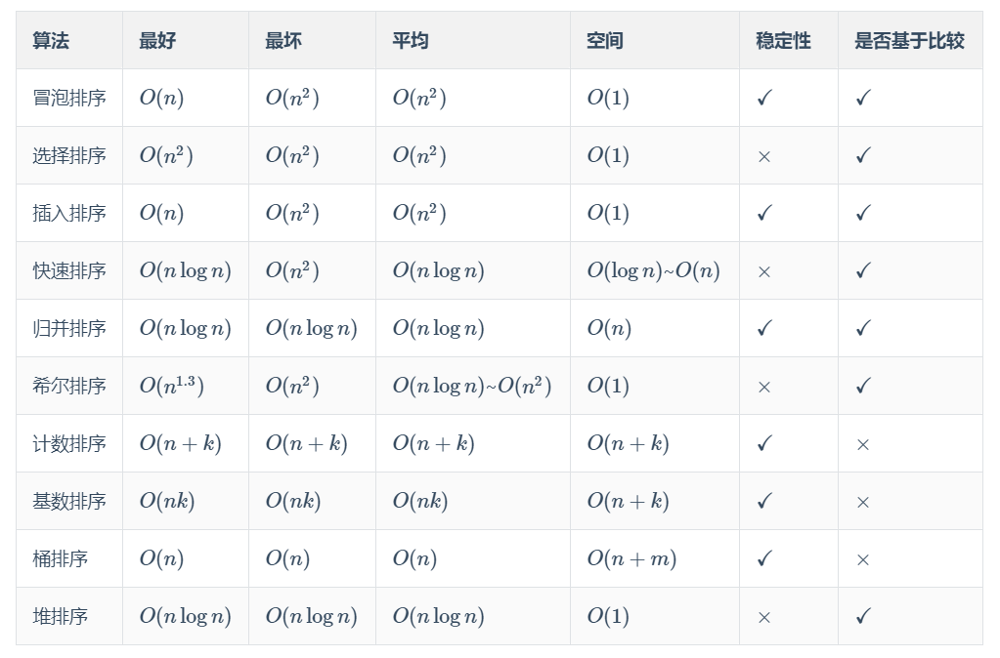

关注公众号【算法码上来】，每日算法干货马上就来！

前言
本文整理并总结了十大经典的排序算法（冒泡排序、选择排序、插入排序、快速排序、归并排序、希尔排序、计数排序、基数排序、桶排序、堆排序）的时间复杂度、空间复杂度等性质。
本文并不会详细讲解每种排序算法的原理，网上有很多很好的教程，大家可以自己去搜了看。
最后我还亲自手写了十种排序算法的 c++ 代码，大家可以用来通过 LeetCode 912. 排序数组 这道题。
性质汇总
如果发现表中有错误，请留言告知。
| 算法 | 最好 | 最坏 | 平均 | 空间 | 稳定性 | 是否基于比较 |
|---|---|---|---|---|---|---|
| 冒泡排序 | $O(n)$ | $O(n^2)$ | $O(n^2)$ | $O(1)$ | $\checkmark$ | $\checkmark$ |
| 选择排序 | $O(n^2)$ | $O(n^2)$ | $O(n^2)$ | $O(1)$ | $\times$ | $\checkmark$ |
| 插入排序 | $O(n)$ | $O(n^2)$ | $O(n^2)$ | $O(1)$ | $\checkmark$ | $\checkmark$ |
| 快速排序 | $O(n\log n)$ | $O(n^2)$ | $O(n\log n)$ | $O(\log n)$~$O(n)$ | $\times$ | $\checkmark$ |
| 归并排序 | $O(n\log n)$ | $O(n\log n)$ | $O(n\log n)$ | $O(n)$ | $\checkmark$ | $\checkmark$ |
| 希尔排序 | $O(n^{1.3})$ | $O(n^2)$ | $O(n\log n)$~$O(n^2)$ | $O(1)$ | $\times$ | $\checkmark$ |
| 计数排序 | $O(n+k)$ | $O(n+k)$ | $O(n+k)$ | $O(n+k)$ | $\checkmark$ | $\times$ |
| 基数排序 | $O(nk)$ | $O(nk)$ | $O(nk)$ | $O(n+k)$ | $\checkmark$ | $\times$ |
| 桶排序 | $O(n)$ | $O(n)$ | $O(n)$ | $O(n+m)$ | $\checkmark$ | $\times$ |
| 堆排序 | $O(n\log n)$ | $O(n\log n)$ | $O(n\log n)$ | $O(1)$ | $\times$ | $\checkmark$ |
如果表格显示有问题的话，还可以直接看下面的汇总图：

维基百科
我觉得还是英文维基百科讲的比较详细、严谨。如果大家看的比较累的话，可以自己百度搜索相应的教程。
冒泡排序
https://en.wikipedia.org/wiki/Bubble_sort
选择排序
https://en.wikipedia.org/wiki/Selection_sort
插入排序
https://en.wikipedia.org/wiki/Insertion_sort
快速排序
https://en.wikipedia.org/wiki/Quicksort
归并排序
https://en.wikipedia.org/wiki/Merge_sort
希尔排序
https://en.wikipedia.org/wiki/Shellsort
计数排序
https://en.wikipedia.org/wiki/Counting_sort
基数排序
https://en.wikipedia.org/wiki/Radix_sort
桶排序
https://en.wikipedia.org/wiki/Bucket_sort
堆排序
https://en.wikipedia.org/wiki/Heapsort
代码实现
所有的排序算法接口都是相同的，也就是 vector<int> xxxSort(vector<int>& nums) 。只需要你传入一个 vector<int> 类型的数组，就能返回排序后的结果。
运行下来可以发现，桶排序速度是比较快的。而冒泡排序、选择排序和插入排序因为时间复杂度太高无法通过本题，基数排序因为无法处理负数也不能通过本题。
class Solution {
public:
vector<int> sortArray(vector<int>& nums) {
return quickSort(nums);
}
// 冒泡排序（超时）
vector<int> bubbleSort(vector<int>& nums) {
int n = nums.size();
for (int i = 0; i < n; ++i) {
for (int j = n-2; j >= i; --j) {
if (nums[j] > nums[j+1]) {
swap(nums[j], nums[j+1]);
}
}
}
return nums;
}
// 选择排序（超时）
vector<int> selectSort(vector<int>& nums) {
int n = nums.size();
for (int i = 0; i < n; ++i) {
int idx = i;
for (int j = i; j < n; ++j) {
if (nums[j] < nums[idx]) {
idx = j;
}
}
swap(nums[i], nums[idx]);
}
return nums;
}
// 插入排序（超时）
vector<int> insertSort(vector<int>& nums) {
int n = nums.size();
for (int i = 0; i < n; ++i) {
for (int j = i; j > 0 && nums[j] < nums[j-1]; --j) {
swap(nums[j], nums[j-1]);
}
}
return nums;
}
// 快速排序（24 ms）
void qSort(vector<int>& nums, int l, int r) {
if (l >= r) return;
int m = l;
for (int i = l; i < r; ++i) {
if (nums[i] < nums[r]) {
swap(nums[m++], nums[i]);
}
}
swap(nums[m], nums[r]);
qSort(nums, l, m-1);
qSort(nums, m+1, r);
}
vector<int> quickSort(vector<int>& nums) {
int n = nums.size();
qSort(nums, 0, n-1);
return nums;
}
// 归并排序（192 ms）
vector<int> mSort(vector<int>& nums, int l, int r) {
if (l >= r) return {nums[l]};
int m = l+(r-l)/2;
vector<int> lnums = mSort(nums, l, m);
vector<int> rnums = mSort(nums, m+1, r);
vector<int> res;
int i = 0, j = 0;
while (i <= m-l && j <= r-m-1) {
if (lnums[i] < rnums[j]) {
res.push_back(lnums[i++]);
} else {
res.push_back(rnums[j++]);
}
}
while (i <= m-l) {
res.push_back(lnums[i++]);
}
while (j <= r-m-1) {
res.push_back(rnums[j++]);
}
return res;
}
vector<int> mergeSort(vector<int>& nums) {
int n = nums.size();
nums = mSort(nums, 0, n-1);
return nums;
}
// 归并排序 + 非递归（80 ms）
vector<int> mergeSortNR(vector<int>& nums) {
int n = nums.size();
for (int len = 1; len < n; len <<= 1) {
for (int l = 0; l < n-len; l += 2*len) {
int m = l+len-1;
int r = min(n-1, l+2*len-1);
vector<int> res;
int i = l, j = m+1;
while (i <= m && j <= r) {
if (nums[i] < nums[j]) {
res.push_back(nums[i++]);
} else {
res.push_back(nums[j++]);
}
}
while (i <= m) {
res.push_back(nums[i++]);
}
while (j <= r) {
res.push_back(nums[j++]);
}
for (int i = l; i <= r; ++i) {
nums[i] = res[i-l];
}
}
}
return nums;
}
// 希尔排序（40 ms）
vector<int> shellSort(vector<int>& nums) {
int n = nums.size();
for (int gap = n/2; gap > 0; gap /= 2) {
for (int i = gap; i < n; ++i) {
for (int j = i; j-gap >= 0 && nums[j-gap] > nums[j]; j -= gap) {
swap(nums[j-gap], nums[j]);
}
}
}
return nums;
}
// 计数排序（32 ms）
vector<int> countSort(vector<int>& nums) {
int n = nums.size();
if (!n) return {};
int minv = *min_element(nums.begin(), nums.end());
int maxv = *max_element(nums.begin(), nums.end());
int m = maxv-minv+1;
vector<int> count(m, 0);
for (int i = 0; i < n; ++i) {
count[nums[i]-minv]++;
}
vector<int> res;
for (int i = 0; i < m; ++i) {
for (int j = 0; j < count[i]; ++j) {
res.push_back(i+minv);
}
}
return res;
}
// 基数排序（不适用于负数）
vector<int> radixSort(vector<int>& nums) {
int n = nums.size();
int maxv = *max_element(nums.begin(), nums.end());
int maxd = 0;
while (maxv > 0) {
maxv /= 10;
maxd++;
}
vector<int> count(10, 0), rank(n, 0);
int base = 1;
while (maxd > 0) {
count.assign(10, 0);
for (int i = 0; i < n; ++i) {
count[(nums[i]/base)%10]++;
}
for (int i = 1; i < 10; ++i) {
count[i] += count[i-1];
}
for (int i = n-1; i >= 0; --i) {
rank[--count[(nums[i]/base)%10]] = nums[i];
}
for (int i = 0; i < n; ++i) {
nums[i] = rank[i];
}
maxd--;
base *= 10;
}
return nums;
}
// 桶排序 (20 ms)
vector<int> bucketSort(vector<int>& nums) {
int n = nums.size();
int maxv = *max_element(nums.begin(), nums.end());
int minv = *min_element(nums.begin(), nums.end());
int bs = 1000;
int m = (maxv-minv)/bs+1;
vector<vector<int> > bucket(m);
for (int i = 0; i < n; ++i) {
bucket[(nums[i]-minv)/bs].push_back(nums[i]);
}
int idx = 0;
for (int i = 0; i < m; ++i) {
int sz = bucket[i].size();
bucket[i] = quickSort(bucket[i]);
for (int j = 0; j < sz; ++j) {
nums[idx++] = bucket[i][j];
}
}
return nums;
}
// 堆排序（32 ms）
void adjust(vector<int>& nums, int p, int s) {
while (2*p+1 < s) {
int c1 = 2*p+1;
int c2 = 2*p+2;
int c = (c2<s && nums[c2]>nums[c1]) ? c2 : c1;
if (nums[c] > nums[p]) swap(nums[c], nums[p]);
else break;
p = c;
}
}
vector<int> heapSort(vector<int>& nums) {
int n = nums.size();
for (int i = n/2-1; i >= 0; --i) {
adjust(nums, i, n);
}
for (int i = n-1; i > 0; --i) {
swap(nums[0], nums[i]);
adjust(nums, 0, i);
}
return nums;
}
};